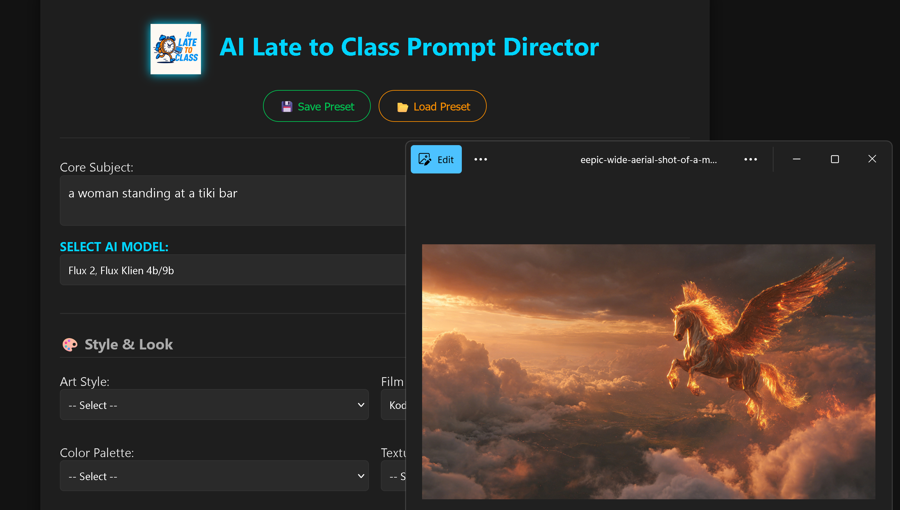
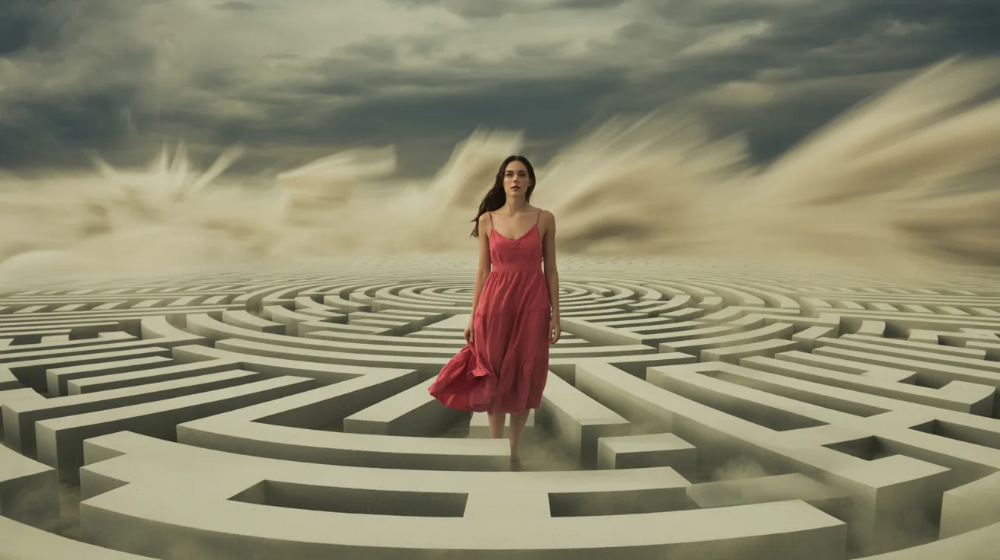
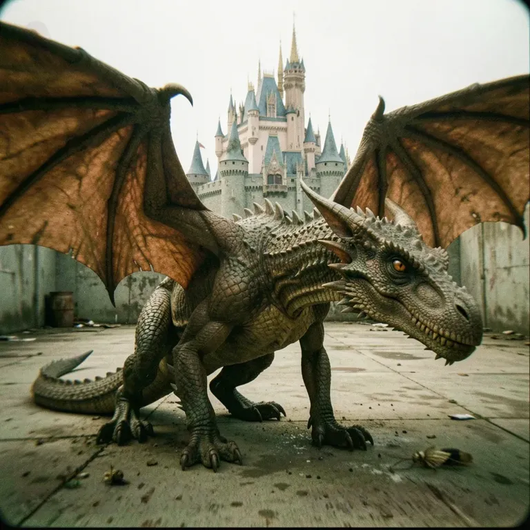

The ultimate AI Prompt Director for Qwen, Z-Image, Seedream, Nano Banana, Flux, Midjourney, Wan 2.2, LTX2, Kling 3, Seedance 2.0, Vidu Q3, Veo 3.1, Sora 2, Runway 4.5, Pixverse 5.5, Hailuo 2.3, Ray 3 . 440 cinematic options, camera lenses, and art styles at your fingertips.

Everything you need to get the exact AI generation you see in your head.
Stop guessing terminology. Select from professional camera bodies, lenses, focal lengths, and Hollywood lighting setups.
Find a style you love? Save your exact combination of settings as a JSON file and load it back up anytime you need it.
Hit writer's block? Use the Randomize button to mix and match crazy art styles, textures, and video movements instantly.

"a beautiful woman in a red sun dress, Digital Illustration, Fujifilm Superia 400 (Green/Magenta Shift), Monochrome (Single Color Shades), Rough / Coarse (Sandpaper / Stone), Abstract Fractal World (Trippy / Geometry), Sandstorm (Beige Haze / Gritty), iPhone 15 Pro Max (Mobile Photography / Smart HDR), 24mm Wide (Cinema Standard Establishing Shot), Super 35 (The Hollywood Standard), Probe Lens (Bug's Eye View / Inside Objects), f/1.2 (Creamy Bokeh / Noctilux Look), Symmetrical Center Frame (Wes Anderson Style), Dolly Zoom (Vertigo Effect / Background Warp), God Rays / Crepuscular Rays (Volumetric Beams through Fog), Stormy & Dark (Thunderclouds / Ominous)"

"a real life dragon with a castle in the background, CCTV Security Footage, Fujifilm Superia 400 (Green/Magenta Shift), Earth Tones (Brown / Green / Beige / Natural), Gritty / Dirty (Street / Industrial), Infinite White Background (Product Photography), Chaotic (High Energy / Motion Blur), Leica M11 (Street Photography / High Contrast), 100mm Macro (Detail / Insects / Texture), Super 8mm (Home Movie / Nostalgic / Soft), Helios 44-2 58mm (Swirly Bokeh / Dreamy), f/22 (Landscape / Sunstars on Lights), Macro Shot (Microscopic / Texture Focus), POV (First Person / Eyes of Character), Hard Key Light (Noir / Sharp Shadows), Liminal Space (Empty / Unsettling / Backrooms)"
Click on the button below to start generating your prompts.
Launch Prompt Director 🚀No subscription just a one of payment and then download.